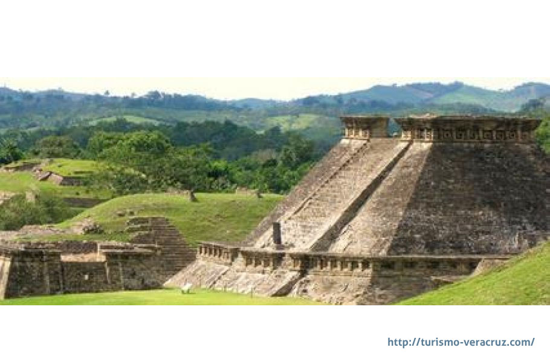
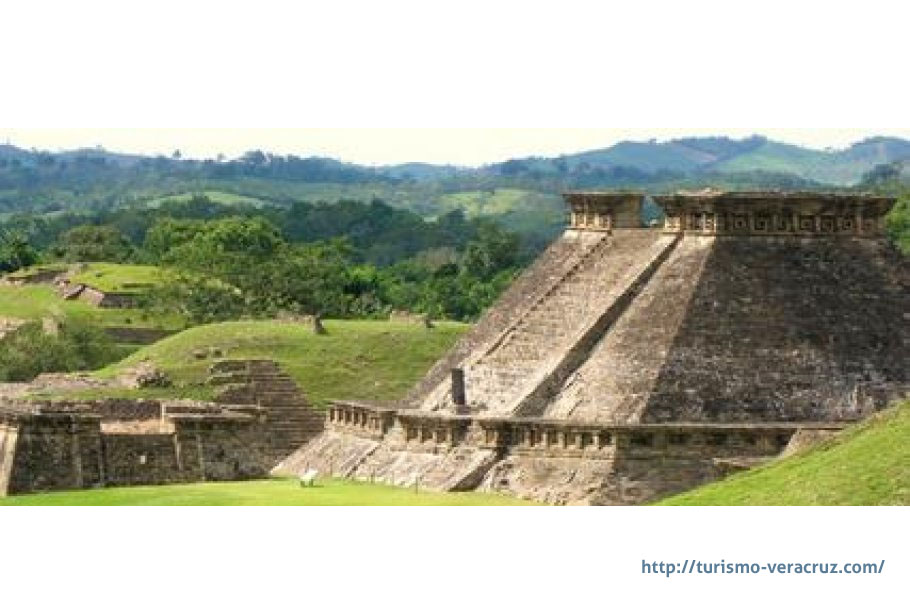
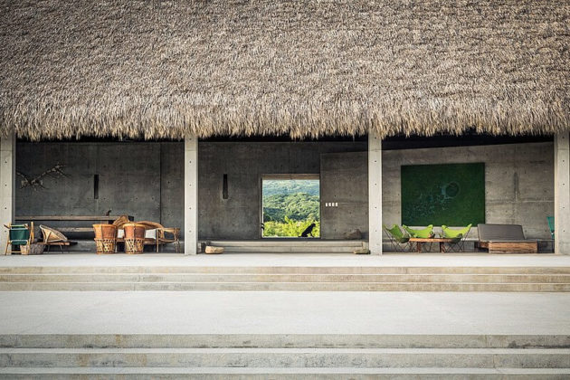

UBICACION TEMPORAL Y ESPACIAL DE LAS CULTURAS MESOAMAERICANAS
Ciilizacion OLMECA
La civilizacion mas antugua de mesoamerica, situados en el Golfo de México entre 1200 y 400 Antes de Cristo (A.C).
Su nombre proveniente del náhuatl "olmecatl"-"Habitante de la region del Hule o del Caucho" fue acuñado por arqueologos en el siglo XX.
CENTROS CEREMONIALES
Los centros ceremoniales mas importantes fueron La venta, Tres Zapotes y San Lorenzo, y algunas piramides elaboradas con tierra.
 

Ciilizacion MAYA
Esta civilizacion florecida en el año 1500 a.c en las siguientes regiones:
1._Peninsula de Yucatán
2._Campeche
3._Quintana Roo
4._Chiapas
5._Tabasco
6._Guatemala
7._Belice
8._Honduras
9._El Salvador
Alcanzo su mayor esplendor en la época clasica entre los años 200 a.c y 900 d.c
En distintas epocas dominaron distintas ciudades-estado como:
Palenque
Yaxchilán
Calakmul
Tikal
Chichen Itzá
Copan entre otros.
Los Mayas ejercieron un gran avance en el desarrollo cientifico y artistico en el área de mesoamerica, tambien crearon una extensa red de comercio con ciudades estado de la region y con otras regiones mesoamericanas y aridoamericanas
El origen del nombre MAYA se utilizaba por los españoles para designar a los pobladores de MAYAPAN
Los mayas tenian una fascinacion con el cielo y la armonia del cosmos, por lo que observaron encansablemente el firmamento
CENTROS CEREMONIALES
Tikal: uno de los mayores y principales centros urbanos de la civilizacion maya en la capital de Calakmul.

Copán: Ubicado al occidente de Honduras,este centro ceremonial maya fue alguna vez la capital de un poderoso reino del periodo clasico maya.

Chichén Itzá: su nombre se traduce como "boca del pozo" ubicado en Yucatán, alli perduran muestras de una imponente arquitectura con grandes templos.
Ciilizacion Teotihuacana
Esta civilizacion fue la mas importante del periodo clasico, se desarrollo en el Valle de México entre 100 a.c y 650 d.c.
Su nombre proviene del nahuatl y significa "lugar donde nacieron los dioses"
Teotihuacán gue un gran centro ceremonial y ciudad producto de una gran planificación. En su etapa de mayor esplendor el centro de la ciudad albergaba al menos de 25 mil personas e incluyendo los alrededores albergaban a mas de entre 150 mil y 200 mil personas.
Fue el
mayor asentamiento humano de toda la historia de Mesoamerica y uno de los mas grande del mundo.
Era una ciudad con mercados, barrios de artesanos y comerciantes provenientes de distintos lugares de México.
Sus principales dioses eran:
1._Tlaloc
2._Quetzalcoatl
3._Huehueteotl
4._Mictlantecuhtli
Civilizacion Zapoteca
En los valles de Etla, Tlacolula y Zimatlan en el estado de Oaxaca se desarrollo a partir de 1400 a.c la civilizacion zapoteca que duro hasta la llegada de los españoles, los zapotecas, ben zaa o gente de las nubes segun su idioma habitaron desde el preclasico, en si apogeo conto con una poblacion de 35 mil y que dominaba los valles centrales y las sierras de Oaxaca.
Desarrollaron una escritura propia, en mesoamerica eran artesanos y comerciantes y queda evidenciada por el barrio zapoteco en la ciudad de Teotihuacan.
Centros ceremoniales
Los principales centros ceremoniales de los zapotecas eran:
1._Monte Albán
2._Mitla
3._Mihuatlán
4._Zimatlán
5._Zaachila
Civilizacion Tolteca
Desarrollada cerca del rio Tula en un fértil valle en el actual estado de Hidalgo entre 650 d.c y 1150 d.c. El nombre proviene del náhuatl Toltécatl o "habitante de Tula", provenientes de Aridoamerica fueron nomadas que se mezclaron con los pueblos del centro de México.<
Su arte estaba plasmado en estatuas y relieves murales, estando ligado a la arquitectura, representando a sus dioses y personajes en esculturas de piedra, murales, ceramicas, pinturas y trabajos de artesanias.
aportaron cambios importantes en cuanto a las normas arquitectonicas que existian en Mesoamerica.
Se estima que en su mayor apogeo acogio a mas de 30 mil habitantes.
Civilizacion Mixteca
Los mixtecas eran una de las mas grandes civilizaciones continuas de la historia de México,se tiene conocimiento de su presencia desde los años 1500 a.c hasta la llegada de los españoles. Habitaron la Region de Mixtecapan(region occidental de Oaxaca) estendiendose hasta Guerrero y Puebla. Su nombre proveniente del Nahuatl significa "Gente de Lluvia".
Los mixtecos fueron Metalurgos exceocionales que fabricaron ornamentos con metales preciosos, obsidiana, cristal de roca y huesos.
Centros ceremoniales
1._Monte Albán
2._Mitla
3._Tilatongo
4._Tututepec

Civilizacion Tarasca
Entre los años 1200 y 1521 d.c, se desarrollo al rededor del lago de Patzucuaro la civilizacion tarasca. El origen de este pueblo es desconocido.
Fue uno de los pocos pueblos que logro frenar la expansion Mexica hacia el occidente al vencer al tlatoani Mexica Acayacatl. Mediante una politica expansiva de conquista y sistema de alianzas extendieron su dominio sobre la actual region de Michoacan.
Fueron artesanos, destacaron como carpinteros, en el arte plumaria y especialmente la metalurgia, trabajaron fundamentalmente el oro, la plata, y el metodo de la cera perdida. Fueron también el unico pueblo que inicio el uso del cobre en utensilios de trabajo, armas y monedas.
Ciilizacion Mexica
Provenientes de las llanuras de Aridoamerica. Su civilizacion se desarrollo entre 1325 y 1521 en el valle de México. El nombre náhuatl mexica se deriva de uno de los nombre (Mexi) de su dios protector Hitzilopochtli.
En el año 1428 los Mexicas se aliaron con el pueblo de Texcocano y los Tepanecas de Tacuba para derrotar a los Tepanecas de Azcapotzalco. Victoriosos se impusieron poco a poco como el pueblo dominante de la nueva Triple Alianza Texcoco-Tenochtitlan- Tlacopan.